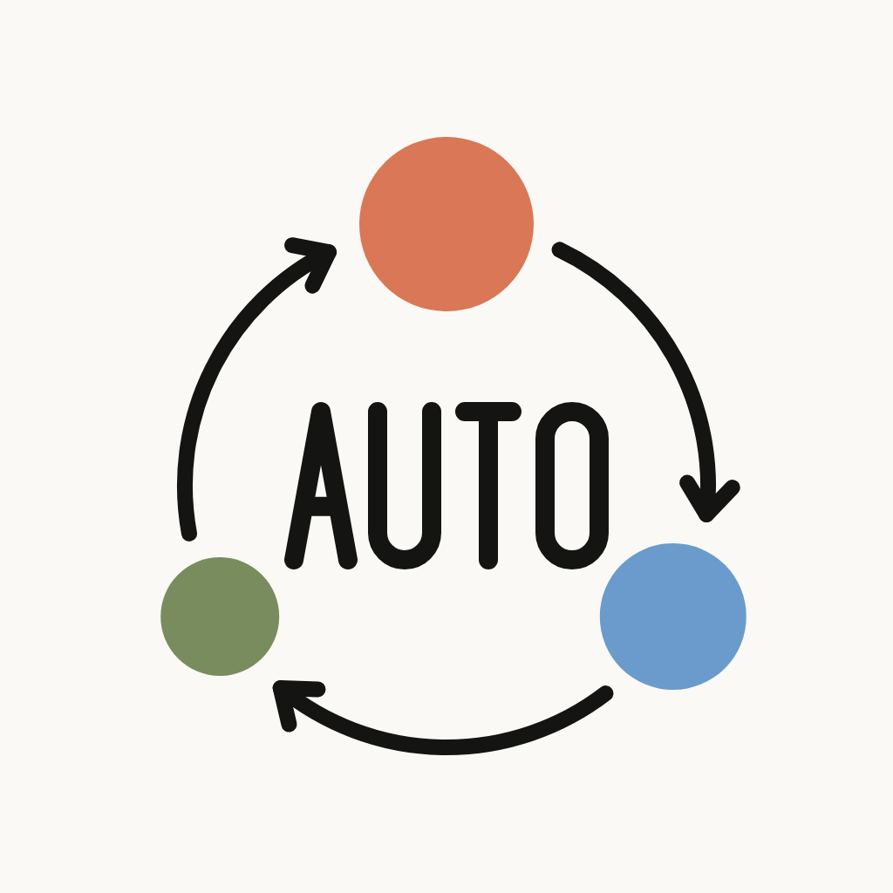

<!doctype html>
<html>
<head>
<meta charset="utf-8">
<title>auto-model demo</title>
<style>
  :root {
    --bg: #141413;
    --card: #1f1e1c;
    --line: #3a3936;
    --ink: #FAF9F5;
    --dim: #8f8c84;
    --opus: #D97757;
    --sonnet: #6A9BCC;
    --haiku: #788C5D;
    --track: #4a4f5c;
    --mono: "SF Mono", Menlo, monospace;
    --sans: "SF Pro Display", -apple-system, "Helvetica Neue", sans-serif;
  }
  html, body {
    margin: 0;
    width: 1080px;
    height: 1920px;
    overflow: hidden;
    background: var(--bg);
    color: var(--ink);
    font-family: var(--sans);
  }
  #stage {
    position: relative;
    width: 1080px;
    height: 1920px;
    overflow: hidden;
  }
  .glow {
    position: absolute;
    inset: 0;
    background:
      radial-gradient(900px 700px at 50% 30%, rgba(217,119,87,.10), transparent 70%),
      radial-gradient(800px 600px at 20% 90%, rgba(106,155,204,.08), transparent 70%);
  }
  .abs { position: absolute; }
  .center { left: 0; right: 0; text-align: center; }
  .headline {
    font-weight: 800;
    font-size: 84px;
    line-height: 1.08;
    letter-spacing: -1.5px;
  }
  .sub {
    font-weight: 500;
    font-size: 44px;
    color: var(--dim);
  }
  .term {
    left: 50px;
    width: 980px;
    top: 470px;
    height: 960px;
    background: var(--card);
    border: 2px solid var(--line);
    border-radius: 28px;
    box-shadow: 0 40px 120px rgba(0,0,0,.55);
    font-family: var(--mono);
    font-size: 31px;
    line-height: 1.45;
    overflow: hidden;
  }
  .chrome {
    height: 64px;
    display: flex;
    align-items: center;
    gap: 14px;
    padding: 0 28px;
    border-bottom: 2px solid var(--line);
    color: var(--dim);
    font-size: 24px;
  }
  .dot { width: 18px; height: 18px; border-radius: 50%; }
  .body {
    position: absolute;
    top: 66px;
    left: 0;
    right: 0;
    bottom: 0;
    display: flex;
    flex-direction: column;
    justify-content: flex-end;
    padding: 0 30px 24px;
  }
  .msg { margin: 10px 0; white-space: pre-wrap; }
  .user { color: var(--ink); }
  .user::before { content: "> "; color: var(--dim); }
  .bot::before { content: "⏺ "; }
  .bot { color: #d6d3cb; }
  .prompt {
    border: 2px solid #55534e;
    border-radius: 14px;
    padding: 12px 18px;
    min-height: 45px;
    white-space: pre-wrap;
    margin-top: 14px;
  }
  .prompt::before { content: "> "; color: var(--dim); }
  .caret {
    display: inline-block;
    width: 16px;
    height: 34px;
    background: var(--ink);
    vertical-align: -6px;
  }
  .footer {
    display: flex;
    justify-content: space-between;
    align-items: center;
    padding: 10px 6px 0;
    font-size: 27px;
  }
  .pick { font-weight: 700; display: inline-block; }
  .panel {
    align-self: flex-end;
    background: #262522;
    border: 2px solid var(--line);
    border-radius: 16px;
    padding: 16px 22px;
    margin-bottom: 4px;
    font-size: 30px;
  }
  .row { white-space: pre; }
  .badge {
    font-family: var(--sans);
    font-weight: 700;
    font-size: 38px;
    padding: 14px 26px;
    border-radius: 999px;
    white-space: nowrap;
  }
  .caption {
    left: 70px;
    right: 70px;
    top: 1575px;
    text-align: center;
    font-weight: 800;
    font-size: 60px;
    line-height: 1.18;
  }
  .cursor { width: 56px; height: 56px; }
  .ripple {
    width: 90px;
    height: 90px;
    border-radius: 50%;
    border: 5px solid var(--ink);
  }
  .install {
    font-family: var(--mono);
    font-size: 30px;
    background: var(--card);
    border: 2px solid var(--line);
    border-radius: 18px;
    padding: 26px 30px;
    left: 70px;
    right: 70px;
    text-align: left;
    line-height: 1.5;
  }
</style>
</head>
<body>
<div id="stage"></div>
<script>
const COLOR = { opus: '#D97757', sonnet: '#6A9BCC', haiku: '#788C5D' }
const TIER = { opus: 'complex', sonnet: 'moderate', haiku: 'simple' }
const CELLS = { opus: 3, sonnet: 2, haiku: 1 }

// Scene order, default lengths (seconds) and narration. render.mjs may override lengths.
const SCENES = [
  { id: 'hook', dur: 4.8, vo: 'Using Opus for every prompt? That’s overkill.' },
  { id: 'intro', dur: 3.2, vo: 'Meet auto-model. It picks the model for you.' },
  { id: 'simple', dur: 4.8, vo: 'Quick question? Haiku answers it.' },
  { id: 'complex', dur: 4.8, vo: 'Big refactor? Opus takes over.' },
  { id: 'follow', dur: 3.8, vo: 'Short follow-ups keep the same model, so the cache stays warm.' },
  { id: 'panel', dur: 5.0, vo: 'Tap the arrow to see the picks, or switch it off.' },
  { id: 'outro', dur: 3.6, vo: 'Get auto-model from the plugin marketplace.' },
]

const params = new URLSearchParams(location.search)
if (params.get('durs')) {
  const durs = params.get('durs').split(',').map(Number)
  SCENES.forEach((s, i) => {
    if (durs[i]) {
      s.dur = durs[i]
    }
  })
}
if (params.get('speech')) {
  const sp = params.get('speech').split(',').map(Number)
  SCENES.forEach((s, i) => {
    if (sp[i]) {
      s.speech = sp[i]
    }
  })
}
let acc = 0
for (const s of SCENES) {
  s.start = acc
  acc += s.dur
}
window.TOTAL = acc
window.SCENES = SCENES

const clamp = (x, a = 0, b = 1) => Math.min(b, Math.max(a, x))
const prog = (t, a, b) => clamp((t - a) / (b - a))
const ease = x => 1 - Math.pow(1 - x, 3)
const inOut = x => (x < 0.5 ? 4 * x * x * x : 1 - Math.pow(-2 * x + 2, 3) / 2)
const back = x => {
  const c = 1.9
  return 1 + (c + 1) * Math.pow(x - 1, 3) + c * Math.pow(x - 1, 2)
}
const typed = (text, t, a, b) => text.slice(0, Math.round(text.length * prog(t, a, b)))
const esc = s => s.replace(/&/g, '&amp;').replace(/</g, '&lt;')

function fadeIn(t, a, d = 0.35, dy = 30) {
  const p = ease(prog(t, a, a + d))
  return `opacity:${p};transform:translateY(${(1 - p) * dy}px);`
}

function colored(word, model) {
  return `<span style="color:${COLOR[model]}">${word}</span>`
}

function iconTile(size) {
  return ``
}

// Karaoke caption: words light up across the narration's length.
function caption(scene, local) {
  const words = scene.vo.split(' ')
  const a = 0.2
  const b = a + (scene.speech || scene.dur - 0.6)
  const lit = words.length * prog(local, a, b)
  const html = words.map((w, i) => {
    const on = i < lit
    return `<span style="color:${on ? 'var(--ink)' : 'rgba(250,249,245,.28)'}">${esc(w)}</span>`
  }).join(' ')
  const p = ease(prog(local, 0, 0.25))
  return `<div class="abs caption" style="opacity:${p}">${html}</div>`
}

// ---- terminal mock --------------------------------------------------------

function bars(model, isDim) {
  const n = CELLS[model]
  let out = ''
  for (let i = 0; i < 3; i++) {
    const c = i < n ? COLOR[model] : 'var(--track)'
    out += `<span style="color:${c}">■</span>`
  }
  return `<span style="opacity:${isDim ? 0.45 : 1}">${out}</span>`
}

function panelHtml(st) {
  const sw = st.isOn
    ? `<span style="color:var(--haiku);font-weight:700">● on</span>`
    : `<span style="color:var(--dim)">○ off</span>`
  const rows = ['opus', 'sonnet', 'haiku'].map(m => {
    const isPick = st.isOn && m === st.pick
    const isDim = !isPick
    const name = `<span style="color:${COLOR[m]};font-weight:${isPick ? 800 : 400}">${m.padEnd(7)}</span>`
    const tier = `<span style="color:var(--dim)">${TIER[m]}</span>`
    return `<div class="row" style="opacity:${isDim ? 0.55 : 1}">${bars(m, isDim)} ${name} ${tier}</div>`
  }).join('')
  return `<div class="row"><b>auto model</b>   <span style="display:inline-block;transform:scale(${st.swScale || 1})">${sw}</span>  <span style="color:var(--dim)">×</span></div>${rows}`
}

function terminal(st) {
  const msgs = st.msgs.map(m => `<div class="msg ${m.who}">${m.html}</div>`).join('')
  let footerRight
  if (!st.isOn) {
    footerRight = `<span style="color:var(--dim)">◇ auto off ▲</span>`
  } else if (st.thinking) {
    footerRight = `<span style="color:var(--dim)">◆ choosing… ▲</span>`
  } else if (st.pick) {
    footerRight = `<span class="pick" style="color:${COLOR[st.pick]};transform:scale(${st.pickScale || 1})">◆ ${st.pick} ▲</span>`
  } else {
    footerRight = `<span style="color:var(--haiku)">◆ auto ▲</span>`
  }
  const panel = st.panel > 0
    ? `<div class="panel" style="opacity:${st.panel};transform:translateY(${(1 - st.panel) * 40}px)">${panelHtml(st)}</div>`
    : ''
  const caret = st.caret ? '<span class="caret"></span>' : ''
  return `
  <div class="abs term" style="${st.style || ''}">
    <div class="chrome">
      <span class="dot" style="background:#ff5f57"></span>
      <span class="dot" style="background:#febc2e"></span>
      <span class="dot" style="background:#28c840"></span>
      <span style="margin-left:18px">claude — ~/my-app</span>
    </div>
    <div class="body">
      ${msgs}
      ${panel}
      <div class="prompt">${esc(st.input)}${caret}</div>
      <div class="footer">
        <span style="color:var(--dim)">? for shortcuts</span>
        ${footerRight}
      </div>
    </div>
  </div>`
}

const Q1 = 'what does ls -la print?'
const A1 = 'Every file, hidden ones too, with permissions, owner, size and date.'
const Q2 = 'redesign the storage layer to support sharding and a write-ahead log'
const A2 = 'Plan: 1) shard router  2) WAL writer  3) migration path. Starting with the router…'
const Q3 = 'yes do it'
const A3 = 'Writing src/store/shard-router.ts…'

// Terminal state for the simple/complex/follow/panel scenes, from their local times.
function termState(id, l) {
  const st = { msgs: [], input: '', caret: true, isOn: true, pick: null, panel: 0 }
  const blink = Math.floor(l * 2.2) % 2 === 0
  if (id === 'simple') {
    st.input = typed(Q1, l, 0.5, 1.6)
    if (l >= 1.8) {
      st.input = ''
      st.msgs.push({ who: 'user', html: esc(Q1) })
      st.thinking = l < 2.3
      if (l >= 2.3) {
        st.pick = 'haiku'
        st.pickScale = 1 + 0.35 * Math.sin(Math.PI * prog(l, 2.3, 2.7))
      }
      if (l >= 2.6) {
        st.msgs.push({ who: 'bot', html: esc(typed(A1, l, 2.6, 3.6)) })
      }
    }
    st.caret = l < 1.8 || blink
    return st
  }
  st.msgs.push({ who: 'user', html: esc(Q1) })
  st.msgs.push({ who: 'bot', html: esc(A1) })
  st.pick = 'haiku'
  if (id === 'complex') {
    st.input = typed(Q2, l, 0.2, 1.8)
    if (l >= 2.0) {
      st.input = ''
      st.msgs.push({ who: 'user', html: esc(Q2) })
      st.thinking = l < 2.5
      if (l >= 2.5) {
        st.pick = 'opus'
        st.pickScale = 1 + 0.35 * Math.sin(Math.PI * prog(l, 2.5, 2.9))
      }
      if (l >= 2.8) {
        st.msgs.push({ who: 'bot', html: esc(typed(A2, l, 2.8, 4.0)) })
      }
    }
    st.caret = l < 2.0 || blink
    return st
  }
  st.msgs.push({ who: 'user', html: esc(Q2) })
  st.msgs.push({ who: 'bot', html: esc(A2) })
  st.pick = 'opus'
  if (id === 'follow') {
    st.input = typed(Q3, l, 0.2, 0.8)
    if (l >= 1.0) {
      st.input = ''
      st.msgs.push({ who: 'user', html: esc(Q3) })
      st.pickScale = 1 + 0.2 * Math.sin(Math.PI * prog(l, 1.1, 1.5))
      if (l >= 1.5) {
        st.msgs.push({ who: 'bot', html: esc(typed(A3, l, 1.5, 2.4)) })
      }
    }
    st.caret = l < 1.0 || blink
    return st
  }
  st.msgs.push({ who: 'user', html: esc(Q3) })
  st.msgs.push({ who: 'bot', html: esc(A3) })
  // panel scene
  st.caret = blink
  st.panel = ease(prog(l, 1.0, 1.35))
  st.isOn = l < 3.4
  st.swScale = 1 + 0.3 * Math.sin(Math.PI * prog(l, 3.4, 3.7))
  return st
}

// ---- scenes ----------------------------------------------------------------

const HEAD = {
  simple: () => `Quick question → ${colored('Haiku', 'haiku')}`,
  complex: () => `Big task → ${colored('Opus', 'opus')}`,
  follow: () => `Follow-up? ${colored('Same model', 'opus')}`,
  panel: () => `See it. ${colored('Switch it.', 'sonnet')}`,
}
const BADGE = {
  simple: { at: 2.3, text: 'simple → haiku', model: 'haiku' },
  complex: { at: 2.5, text: 'complex → opus', model: 'opus' },
  follow: { at: 1.1, text: 'short reply → keeps opus · cache stays warm', model: 'opus' },
}

function sceneHook(l, d) {
  // slow push-in over the whole hook, then a soft fade into the intro
  const zoom = 1 + 0.05 * ease(prog(l, 0, d))
  const fade = 1 - inOut(prog(l, d - 0.45, d + 0.45))
  return `<div class="abs" style="inset:0;transform:scale(${zoom});opacity:${fade}">${hookBody(l)}</div>`
}

function hookBody(l) {
  const circles = [
    { m: 'opus', r: 150, x: 540, y: 900, at: 0.0, price: '$$$' },
    { m: 'sonnet', r: 110, x: 290, y: 1170, at: 0.15, price: '$$' },
    { m: 'haiku', r: 85, x: 790, y: 1190, at: 0.3, price: '$' },
  ]
  let html = `<div class="abs center headline" style="top:300px;${fadeIn(l, 0)}">Opus for<br>every prompt?</div>`
  for (const c of circles) {
    const p = back(prog(l, c.at + 0.2, c.at + 0.7))
    const opacity = c.m === 'opus' ? 1 : 0.35 + 0.65 * (1 - prog(l, 1.4, 1.8))
    const pulse = c.m === 'opus' ? 1 + 0.04 * Math.sin(2 * Math.PI * Math.max(0, l - 1.0) / 1.2) * prog(l, 1.0, 1.6) : 1
    html += `<div class="abs" style="left:${c.x - c.r}px;top:${c.y - c.r}px;width:${2 * c.r}px;height:${2 * c.r}px;border-radius:50%;background:${COLOR[c.m]};transform:scale(${p * pulse});opacity:${opacity};display:flex;flex-direction:column;align-items:center;justify-content:center;font-weight:800;font-size:${c.r * 0.34}px;color:#141413">${c.m}<span style="font-size:${c.r * 0.28}px;opacity:.75">${c.price}</span></div>`
  }
  const s = back(prog(l, 1.5, 1.9))
  html += `<div class="abs center" style="top:1330px;transform:scale(${s});opacity:${prog(l, 1.5, 1.6)}"><span class="badge" style="background:#3a1f16;color:var(--opus);font-size:54px">That's overkill.</span></div>`
  return html
}

function sceneIntro(l) {
  const p = ease(prog(l, 0, 0.9))
  let html = `<div class="abs center" style="top:470px;opacity:${p};transform:scale(${0.85 + 0.15 * p}) rotate(${(1 - p) * -8}deg)">${iconTile(400)}</div>`
  html += `<div class="abs center headline" style="top:960px;font-size:110px;${fadeIn(l, 0.35)}">auto-model</div>`
  html += `<div class="abs center sub" style="top:1100px;${fadeIn(l, 0.6)}">a Claude Code mod that picks<br>the model for every prompt</div>`
  return html
}

function sceneTerm(id, l) {
  const st = termState(id, l)
  if (id === 'simple') {
    const p = ease(prog(l, 0, 0.4))
    st.style = `opacity:${p};transform:translateY(${(1 - p) * 80}px) scale(${0.96 + 0.04 * p})`
  }
  let html = `<div class="abs center headline" style="top:250px;font-size:76px;${fadeIn(l, 0.05)}">${HEAD[id]()}</div>`
  html += terminal(st)
  const b = BADGE[id]
  if (b && l >= b.at) {
    const s = back(prog(l, b.at, b.at + 0.35))
    html += `<div class="abs" style="right:50px;top:1452px;transform:scale(${s});transform-origin:right center"><span class="badge" style="background:${COLOR[b.model]};color:#141413;font-size:${id === 'follow' ? 32 : 38}px">${b.text}</span></div>`
  }
  if (id === 'panel') {
    html += cursorLayer(l)
  }
  return html
}

// Cursor for the panel scene: in from the bottom, click ▲ at 1.0, then the "● on" chip at 3.4.
const ARROW_PT = { x: 985, y: 1385 }
const CHIP_PT = { x: 790, y: 1050 }
function cursorLayer(l) {
  const startPt = { x: 760, y: 1800 }
  let pt
  if (l < 1.0) {
    const p = inOut(prog(l, 0.1, 0.9))
    pt = { x: startPt.x + (ARROW_PT.x - startPt.x) * p, y: startPt.y + (ARROW_PT.y - startPt.y) * p }
  } else if (l < 2.7) {
    pt = ARROW_PT
  } else {
    const p = inOut(prog(l, 2.7, 3.3))
    pt = { x: ARROW_PT.x + (CHIP_PT.x - ARROW_PT.x) * p, y: ARROW_PT.y + (CHIP_PT.y - ARROW_PT.y) * p }
  }
  let html = ''
  for (const at of [1.0, 3.4]) {
    if (l >= at && l < at + 0.45) {
      const p = prog(l, at, at + 0.45)
      const c = at === 1.0 ? ARROW_PT : CHIP_PT
      html += `<div class="abs ripple" style="left:${c.x - 45}px;top:${c.y - 45}px;transform:scale(${0.4 + p});opacity:${1 - p}"></div>`
    }
  }
  const press = (l >= 1.0 && l < 1.12) || (l >= 3.4 && l < 3.52) ? 0.85 : 1
  html += `<svg class="abs cursor" style="left:${pt.x - 8}px;top:${pt.y - 4}px;transform:scale(${press});opacity:${prog(l, 0.05, 0.25)}" viewBox="0 0 24 24"><path d="M3 2 L3 19 L8 14.5 L11.5 22 L14.5 20.6 L11 13.2 L17.5 13.2 Z" fill="#FAF9F5" stroke="#141413" stroke-width="1.4" stroke-linejoin="round"/></svg>`
  return html
}

function sceneOutro(l) {
  let html = `<div class="abs center" style="top:330px;transform:scale(${back(prog(l, 0, 0.5))})">${iconTile(300)}</div>`
  html += `<div class="abs center headline" style="top:700px;font-size:104px;${fadeIn(l, 0.2)}">auto-model</div>`
  html += `<div class="abs center sub" style="top:840px;${fadeIn(l, 0.35)}">${colored('haiku', 'haiku')} · ${colored('sonnet', 'sonnet')} · ${colored('opus', 'opus')} — picked for you</div>`
  html += `<div class="abs install" style="top:1010px;${fadeIn(l, 0.55)}"><span style="color:var(--dim)">&gt;</span> /plugin install auto-model<br>&nbsp;&nbsp;--marketplace NeoNeuron/auto-model</div>`
  html += `<div class="abs center sub" style="top:1260px;font-size:38px;${fadeIn(l, 0.8)}">github.com/NeoNeuron/auto-model · MIT</div>`
  return html
}

window.render = function (t) {
  let scene = SCENES[SCENES.length - 1]
  for (const s of SCENES) {
    if (t >= s.start && t < s.start + s.dur) {
      scene = s
      break
    }
  }
  const l = t - scene.start
  let html = '<div class="glow"></div>'
  if (scene.id === 'hook') {
    html += sceneHook(l, scene.dur)
  } else if (scene.id === 'intro') {
    // crossfade: the hook keeps fading out over the first moments of the intro
    const hook = SCENES[0]
    if (l < 0.45) {
      html += sceneHook(hook.dur + l, hook.dur)
    }
    html += sceneIntro(l)
  } else if (scene.id === 'outro') {
    html += sceneOutro(l)
  } else {
    html += sceneTerm(scene.id, l)
  }
  if (scene.id === 'intro' && l < 0.35) {
    html += `<div style="opacity:${1 - prog(l, 0, 0.35)}">${caption(SCENES[0], SCENES[0].dur + l)}</div>`
  }
  html += caption(scene, l)
  const out = prog(t, TOTAL - 0.4, TOTAL)
  html += `<div class="abs" style="inset:0;background:#141413;opacity:${out}"></div>`
  document.getElementById('stage').innerHTML = html
}

window.render(Number(params.get('t') || 0))
</script>
</body>
</html>
